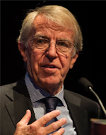
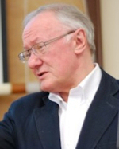
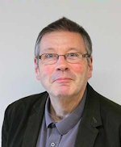
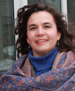
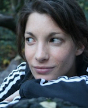
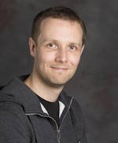

This year we've asked our keynote speakers to reflect on the past, present, and future of the subject area and community. With that in mind we're delighted to announce the following speakers:
Professor Mike Batty (CASA UCL, UK) and Professor Sir Alan Wilson (the Alan Turning Institute) will be drawing key lessons from their experience during the development of the quantitative revolution and beyond.
Professor Dawn Cassandra Parker (Waterloo, Canada) and Professor Chris Brunsden (National Centre for Geocomputation, Ireland) will be exploring the state of the art in geocomputation, and what's lined up in the way of exciting work in the near future.
Dr Adam Dennett (CASA UCL, UK) and Dr Dianna Smith (Southampton, UK) present a special talk on the future, crowdsourced from you – the community! See our Community Keynote page for more info on how to get involved. New staff and PhD students are especially encouraged. We want to know what's exciting you and where you think the subject should go next!
|  | Professor Sir Alan Wilson FRS FBA FAcSS has been an instrumental figure in computational geography from the quantitative revolution in Britain in the 60s and 70s through to the present day. He has made a wide range of contributions to the spatial sciences, in areas as diverse as gravity modelling and catastrophe theory. With a career starting in theoretical physics he moved into socio-economics at the University of Oxford in 1964, the first of a number of positions in academia and government that culminated with becoming Professor of Urban and Regional Geography at the University of Leeds in 1970. During his time at Leeds he developed the spin-off company GMAP, one of the largest spin-offs in the UK at the time. Becoming Vice Chancellor at Leeds in 1991, he managed the University for 13 years before becoming the first Director General for Higher Education for the UK. In 2007 he became Professor of Urban and Regional Systems at CASA, University College London, and in 2016 he was chosen to lead the new Alan Turing Institute, the national institute for data science. |
|  | Professor Mike Batty CBE, FBA, FRS, FAcSS is Chairman of the Centre for Advanced Spatial Analysis, UCL, UK, and Bartlett Professor of Planning at UCL. Professor Batty has been a key figure in urban modelling and analysis since the 1970s, making contributions in areas as diverse as complexity and smart cities. He was Lecturer then Reader at the University of Reading in the 1970s before being appointed Professor of City Planning at the University of Wales at Cardiff in 1979 and then Director of the National Center for Geographic Information and Analysis at the State University of New York at Buffalo in 1990. In 1995 he set up the Centre for Advanced Spatial Analysis, UCL, now one of the foremost centres for spatial analysis in the UK and a much loved and respected hub of advice and support for a wide range of young academics. |
|  | Professor Chris Brunsdon is Professor of Geocomputation, and Director of the National Centre for Geocomputation at Maynooth University, Ireland. Professor Brunsdon has made major contributions to the statistical analysis of spatial data, most notably in developing Geographically Weighted Regression in combination with colleagues at Newcastle University. Starting his career from a background in medical statistics, he has worked at Newcastle, Leicester, Glamorgan, and Liverpool Universities before taking up the position in Ireland. |
|  | Professor Dawn Cassandra Parker is a Professor in the School of Planning at the University of Waterloo, Canada. She is a leading light in land-use change modelling, especially utilising Agent Based Models. With a PhD in Agricultural and Resource Economics from University of California at Davis and prior experience working at the Federal Reserve Board, she started her academic career as a post-doctoral fellow under Elinor Ostrom at Indiana University. She began her professorial career George Mason University as a founding member of the graduate program in computational social science, before moving to the University of Waterloo, Canada in 2009. At Waterloo, she took an active role in development of the Waterloo Institute for Complexity and Innovation, serving as associate director and director, as well as achieving full professor in the School of Planning in 2016. |
|  | Dr Dianna Smith is a lecturer in GIS in Geography and Environment, University of Southampton, UK. Dr Smith works in the areas of food poverty, health geographies, and public health. Hailing originally from Texas, she has worked in the UK for the last 10 years, including an MRC Research Fellowship and lecturing positions at Imperial College and Queen Mary University, London. |
|  | Dr Adam Dennett is Deputy Director of the Centre for Advanced Spatial Analysis, UCL, UK and a Lecturer in Smart Cities and Urban Analytics. Dr Dennett has worked extensively in migration flows, especially through gravity modelling, and prior to joining UCL worked for the ESRC funded Centre for Interaction Data Estimation and Research project, along with the UK Data Service Census Support Service and the Centre for Longitudinal Study Information and User Support. |